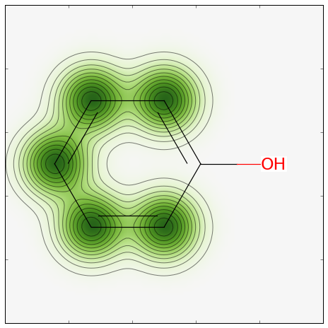

RDKit Cookbook¶
What is this?¶
This document provides examples of how to carry out particular tasks using the RDKit functionality from Python. The contents have been contributed by the RDKit community.
If you find mistakes, or have suggestions for improvements, please either fix them yourselves in the source document (the .rst file) or send them to the mailing list: rdkit-discuss@lists.sourceforge.net (you will need to subscribe first)
Miscellaneous Topics¶
Using a different aromaticity model¶
By default, the RDKit applies its own model of aromaticity (explained in the RDKit Theory Book) when it reads in molecules. It is, however, fairly easy to override this and use your own aromaticity model.
The easiest way to do this is it provide the molecules as SMILES with the aromaticity set as you would prefer to have it. For example, consider indole:

By default the RDKit considers both rings to be aromatic:
>>> from rdkit import Chem
>>> m = Chem.MolFromSmiles('N1C=Cc2ccccc12')
>>> m.GetSubstructMatches(Chem.MolFromSmarts('c'))
((1,), (2,), (3,), (4,), (5,), (6,), (7,), (8,))
If you’d prefer to treat the five-membered ring as aliphatic, which is how the input SMILES is written, you just need to do a partial sanitization that skips the kekulization and aromaticity perception steps:
>>> m2 = Chem.MolFromSmiles('N1C=Cc2ccccc12',sanitize=False)
>>> Chem.SanitizeMol(m2,sanitizeOps=Chem.SanitizeFlags.SANITIZE_ALL^Chem.SanitizeFlags.SANITIZE_KEKULIZE^Chem.SanitizeFlags.SANITIZE_SETAROMATICITY)
rdkit.Chem.rdmolops.SanitizeFlags.SANITIZE_NONE
>>> m2.GetSubstructMatches(Chem.MolFromSmarts('c'))
((3,), (4,), (5,), (6,), (7,), (8,))
It is, of course, also possible to write your own aromaticity perception function, but that is beyond the scope of this document.
Manipulating Molecules¶
Cleaning up heterocycles¶
Mailing list discussions:
- http://www.mail-archive.com/rdkit-discuss@lists.sourceforge.net/msg01185.html
- http://www.mail-archive.com/rdkit-discuss@lists.sourceforge.net/msg01162.html
- http://www.mail-archive.com/rdkit-discuss@lists.sourceforge.net/msg01900.html
- http://www.mail-archive.com/rdkit-discuss@lists.sourceforge.net/msg01901.html
The code:
Examples of using it:
This produces:
Parallel conformation generation¶
Mailing list discussion: http://www.mail-archive.com/rdkit-discuss@lists.sourceforge.net/msg02648.html
The code:
""" contribution from Andrew Dalke """
import sys
from rdkit import Chem
from rdkit.Chem import AllChem
# Download this from http://pypi.python.org/pypi/futures
from concurrent import futures
# Download this from http://pypi.python.org/pypi/progressbar
import progressbar
## On my machine, it takes 39 seconds with 1 worker and 10 seconds with 4.
## 29.055u 0.102s 0:28.68 101.6% 0+0k 0+3io 0pf+0w
#max_workers=1
## With 4 threads it takes 11 seconds.
## 34.933u 0.188s 0:10.89 322.4% 0+0k 125+1io 0pf+0w
max_workers=4
# (The "u"ser time includes time spend in the children processes.
# The wall-clock time is 28.68 and 10.89 seconds, respectively.)
# This function is called in the subprocess.
# The parameters (molecule and number of conformers) are passed via a Python
def generateconformations(m, n):
m = Chem.AddHs(m)
ids=AllChem.EmbedMultipleConfs(m, numConfs=n)
for id in ids:
AllChem.UFFOptimizeMolecule(m, confId=id)
# EmbedMultipleConfs returns a Boost-wrapped type which
# cannot be pickled. Convert it to a Python list, which can.
return m, list(ids)
smi_input_file, sdf_output_file = sys.argv[1:3]
n = int(sys.argv[3])
writer = Chem.SDWriter(sdf_output_file)
suppl = Chem.SmilesMolSupplier(smi_input_file, titleLine=False)
with futures.ProcessPoolExecutor(max_workers=max_workers) as executor:
# Submit a set of asynchronous jobs
jobs = []
for mol in suppl:
if mol:
job = executor.submit(generateconformations, mol, n)
jobs.append(job)
widgets = ["Generating conformations; ", progressbar.Percentage(), " ",
progressbar.ETA(), " ", progressbar.Bar()]
pbar = progressbar.ProgressBar(widgets=widgets, maxval=len(jobs))
for job in pbar(futures.as_completed(jobs)):
mol,ids=job.result()
for id in ids:
writer.write(mol, confId=id)
writer.close()
Neutralizing Charged Molecules¶
Mailing list discussion: http://www.mail-archive.com/rdkit-discuss@lists.sourceforge.net/msg02648.html
The code:
""" contribution from Hans de Winter """
from rdkit import Chem
from rdkit.Chem import AllChem
def _InitialiseNeutralisationReactions():
patts= (
# Imidazoles
('[n+;H]','n'),
# Amines
('[N+;!H0]','N'),
# Carboxylic acids and alcohols
('[$([O-]);!$([O-][#7])]','O'),
# Thiols
('[S-;X1]','S'),
# Sulfonamides
('[$([N-;X2]S(=O)=O)]','N'),
# Enamines
('[$([N-;X2][C,N]=C)]','N'),
# Tetrazoles
('[n-]','[nH]'),
# Sulfoxides
('[$([S-]=O)]','S'),
# Amides
('[$([N-]C=O)]','N'),
)
return [(Chem.MolFromSmarts(x),Chem.MolFromSmiles(y,False)) for x,y in patts]
_reactions=None
def NeutraliseCharges(smiles, reactions=None):
global _reactions
if reactions is None:
if _reactions is None:
_reactions=_InitialiseNeutralisationReactions()
reactions=_reactions
mol = Chem.MolFromSmiles(smiles)
replaced = False
for i,(reactant, product) in enumerate(reactions):
while mol.HasSubstructMatch(reactant):
replaced = True
rms = AllChem.ReplaceSubstructs(mol, reactant, product)
mol = rms[0]
if replaced:
return (Chem.MolToSmiles(mol,True), True)
else:
return (smiles, False)
Examples of using it:
smis=("c1cccc[nH+]1",
"C[N+](C)(C)C","c1ccccc1[NH3+]",
"CC(=O)[O-]","c1ccccc1[O-]",
"CCS",
"C[N-]S(=O)(=O)C",
"C[N-]C=C","C[N-]N=C",
"c1ccc[n-]1",
"CC[N-]C(=O)CC")
for smi in smis:
(molSmiles, neutralised) = NeutraliseCharges(smi)
print(smi + "->" + molSmiles)
This produces:
c1cccc[nH+]1 -> c1ccncc1
C[N+](C)(C)C -> C[N+](C)(C)C
c1ccccc1[NH3+] -> Nc1ccccc1
CC(=O)[O-] -> CC(=O)O
c1ccccc1[O-] -> Oc1ccccc1
CCS -> CCS
C[N-]S(=O)(=O)C -> CNS(C)(=O)=O
C[N-]C=C -> C=CNC
C[N-]N=C -> C=NNC
c1ccc[n-]1 -> c1cc[nH]c1
CC[N-]C(=O)CC -> CCNC(=O)CC
3D functionality in the RDKit¶
The RDKit contains a range of 3D functionalities such as:
- Shape alignment
- RMS calculation
- Shape Tanimoto Distance
- Shape Protrude Distance
- 3D pharmacophore fingerprint
- Torsion fingerprint (deviation)
There are two alignment methods currently available in the RDKit. As an example we use two crystal structures from the PDB of the same molecule.
The code:
from rdkit import Chem, RDConfig
from rdkit.Chem import AllChem, rdMolAlign
# The reference molecule
ref = Chem.MolFromSmiles('NC(=[NH2+])c1ccc(C[C@@H](NC(=O)CNS(=O)(=O)c2ccc3ccccc3c2)C(=O)N2CCCCC2)cc1')
# The PDB conformations
mol1 = Chem.MolFromPDBFile(RDConfig.RDBaseDir+'/rdkit/Chem/test_data/1DWD_ligand.pdb')
mol1 = AllChem.AssignBondOrdersFromTemplate(ref, mol1)
mol2 = Chem.MolFromPDBFile(RDConfig.RDBaseDir+'/rdkit/Chem/test_data/1PPC_ligand.pdb')
mol2 = AllChem.AssignBondOrdersFromTemplate(ref, mol2)
# Align them
rms = rdMolAlign.AlignMol(mol1, mol2)
print(rms)
# Align them with OPEN3DAlign
pyO3A = rdMolAlign.GetO3A(mol1, mol2)
score = pyO3A.Align()
print(score)
This produces:
1.55001955728
0.376459885045
If a molecule contains more than one conformer, they can be aligned with respect to the first conformer. If a list is provided to the option RMSlist, the RMS value from the alignment are stored. The RMS value of two conformers of a molecule can also be calculated separately, either with or without alignment (using the flag prealigned).
Examples of using it:
from rdkit import Chem
from rdkit.Chem import AllChem
mol = Chem.MolFromSmiles('NC(=[NH2+])c1ccc(C[C@@H](NC(=O)CNS(=O)(=O)c2ccc3ccccc3c2)C(=O)N2CCCCC2)cc1')
cids = AllChem.EmbedMultipleConfs(mol, numConfs=50, maxAttempts=1000, pruneRmsThresh=0.1)
print(len(cids))
# align the conformers
rmslist = []
AllChem.AlignMolConformers(mol, RMSlist=rmslist)
print(len(rmslist))
# calculate RMS of confomers 1 and 9 separately
rms = AllChem.GetConformerRMS(mol, 1, 9, prealigned=True)
This produces:
50
49
For shape comparison, the RDKit provides two Shape-based distances that can be calculated for two prealigned molecules or conformers. Shape protrude distance focusses on the volume mismatch, while Shape Tanimoto distance takes the volume overlay overall into account.
Examples of using it:
from rdkit import Chem, RDConfig
from rdkit.Chem import AllChem, rdMolAlign, rdShapeHelpers
ref = Chem.MolFromSmiles('NC(=[NH2+])c1ccc(C[C@@H](NC(=O)CNS(=O)(=O)c2ccc3ccccc3c2)C(=O)N2CCCCC2)cc1')
mol1 = Chem.MolFromPDBFile(RDConfig.RDBaseDir+'/rdkit/Chem/test_data/1DWD_ligand.pdb')
mol1 = AllChem.AssignBondOrdersFromTemplate(ref, mol1)
mol2 = Chem.MolFromPDBFile(RDConfig.RDBaseDir+'/rdkit/Chem/test_data/1PPC_ligand.pdb')
mol2 = AllChem.AssignBondOrdersFromTemplate(ref, mol2)
rms = rdMolAlign.AlignMol(mol1, mol2)
tani = rdShapeHelpers.ShapeTanimotoDist(mol1, mol2)
prtr = rdShapeHelpers.ShapeProtrudeDist(mol1, mol2)
print(rms, tani, prtr)
This produces:
1.55001955728 0.18069102331 0.0962800875274
A 3D pharmacophore fingerprint can be calculated using the RDKit by feeding a 3D distance matrix to the 2D-pharmacophore machinery.
Examples of using it:
from rdkit import Chem, DataStructs, RDConfig
from rdkit.Chem import AllChem
from rdkit.Chem.Pharm2D import Gobbi_Pharm2D, Generate
ref = Chem.MolFromSmiles('NC(=[NH2+])c1ccc(C[C@@H](NC(=O)CNS(=O)(=O)c2ccc3ccccc3c2)C(=O)N2CCCCC2)cc1')
mol1 = Chem.MolFromPDBFile(RDConfig.RDBaseDir+'/rdkit/Chem/test_data/1DWD_ligand.pdb')
mol1 = AllChem.AssignBondOrdersFromTemplate(ref, mol1)
mol2 = Chem.MolFromPDBFile(RDConfig.RDBaseDir+'/rdkit/Chem/test_data/1PPC_ligand.pdb')
mol2 = AllChem.AssignBondOrdersFromTemplate(ref, mol2)
# pharmacophore fingerprint
factory = Gobbi_Pharm2D.factory
fp1 = Generate.Gen2DFingerprint(mol1, factory, dMat=Chem.Get3DDistanceMatrix(mol1))
fp2 = Generate.Gen2DFingerprint(mol2, factory, dMat=Chem.Get3DDistanceMatrix(mol2))
# Tanimoto similarity
tani = DataStructs.TanimotoSimilarity(fp1, fp2)
print(tani)
This produces:
0.451665312754
The RDKit provides an implementation of the torsion fingerprint deviation (TFD) approach developed by Schulz-Gasch et al. (J. Chem. Inf. Model, 52, 1499, 2012). For a pair of conformations of a molecule, the torsional angles of the rotatable bonds and the ring systems are recorded in a torsion fingerprint (TF), and the deviations between the TFs calculated, normalized and summed up. For each torsion, a set of four atoms a-b-c-d are selected.
The RDKit implementation allows the user to customize the torsion fingerprints as described in the following.
- In the original approach, the torsions are weighted based on their distance to the center of the molecule. By default, this weighting is performed, but can be turned off using the flag useWeights=False
- If symmetric atoms a and/or d exist, all possible torsional angles are calculated. To determine if two atoms are symmetric, the hash codes from the Morgan algorithm at a given radius are used (default: radius = 2).
- In the original approach, the maximal deviation used for normalization is 180.0 degrees for all torsions (default). If maxDev=』spec』, a torsion-type dependent maximal deviation is used for the normalization.
- In the original approach, single bonds adjacent to triple bonds and allenes are ignored (default). If ignoreColinearBonds=』False』, a 「combined」 torsion is used
In addition there are a few differences to the implementation by Schulz-Gasch et al.:
- Hydrogens are never considered.
- In the original approach, atoms a and/or d are chosen randomly if atom b and/or c have multiple non-symmetric neighbors. The RDKit implementation picks the atom with the smallest Morgan invariant. This way the choice is independent of the atom order in the molecule.
- In the case of symmetric atoms a and/or d, the RDKit implementation stores all possible torsional angles in the TF instead of only storing the smallest one as in the original approach. Subsequently, all possible deviations are determined and the smallest one used for the TFD calculation. This procedure guarantees that the smallest deviations enter the TFD.
Examples of using it:
from rdkit import Chem, RDConfig
from rdkit.Chem import AllChem, TorsionFingerprints
ref = Chem.MolFromSmiles('NC(=[NH2+])c1ccc(C[C@@H](NC(=O)CNS(=O)(=O)c2ccc3ccccc3c2)C(=O)N2CCCCC2)cc1')
mol1 = Chem.MolFromPDBFile(RDConfig.RDBaseDir+'/rdkit/Chem/test_data/1DWD_ligand.pdb')
mol1 = AllChem.AssignBondOrdersFromTemplate(ref, mol1)
mol2 = Chem.MolFromPDBFile(RDConfig.RDBaseDir+'/rdkit/Chem/test_data/1PPC_ligand.pdb')
mol2 = AllChem.AssignBondOrdersFromTemplate(ref, mol2)
tfd1 = TorsionFingerprints.GetTFDBetweenMolecules(mol1, mol2)
tfd2 = TorsionFingerprints.GetTFDBetweenMolecules(mol1, mol2, useWeights=False)
tfd3 = TorsionFingerprints.GetTFDBetweenMolecules(mol1, mol2, maxDev='spec')
print(tfd1, tfd2, tfd3)
This produces:
0.0691236990428 0.111475253992 0.0716255058804
If the TFD between conformers of the same molecule is to be calculated, the function GetTFDBetweenConformers() should be used for performance reasons.
Examples of using it:
from rdkit import Chem, RDConfig
from rdkit.Chem import AllChem, TorsionFingerprints
ref = Chem.MolFromSmiles('NC(=[NH2+])c1ccc(C[C@@H](NC(=O)CNS(=O)(=O)c2ccc3ccccc3c2)C(=O)N2CCCCC2)cc1')
mol1 = Chem.MolFromPDBFile(RDConfig.RDBaseDir+'/rdkit/Chem/test_data/1DWD_ligand.pdb')
mol1 = AllChem.AssignBondOrdersFromTemplate(ref, mol1)
mol2 = Chem.MolFromPDBFile(RDConfig.RDBaseDir+'/rdkit/Chem/test_data/1PPC_ligand.pdb')
mol1.AddConformer(mol2.GetConformer(), assignId=True)
tfd = TorsionFingerprints.GetTFDBetweenConformers(mol1, confIds1=[0], confIds2=[1])
print(tfd)
This produces:
[0.0691...]
For the conformer RMS and TFD values, the RDKit provides convenience functions that calculated directly the symmetric matrix which can be fed into a clustering algorithm such as Butina clustering. The flag reordering ensures that the number of neighbors of the unclustered molecules is updated every time a cluster is created.
Examples of using it:
from rdkit import Chem
from rdkit.Chem import AllChem, TorsionFingerprints
from rdkit.ML.Cluster import Butina
mol = Chem.MolFromSmiles('NC(=[NH2+])c1ccc(C[C@@H](NC(=O)CNS(=O)(=O)c2ccc3ccccc3c2)C(=O)N2CCCCC2)cc1')
cids = AllChem.EmbedMultipleConfs(mol, numConfs=50, maxAttempts=1000, pruneRmsThresh=0.1)
# RMS matrix
rmsmat = AllChem.GetConformerRMSMatrix(mol, prealigned=False)
# TFD matrix
tfdmat = TorsionFingerprints.GetTFDMatrix(mol)
# clustering
num = mol.GetNumConformers()
rms_clusters = Butina.ClusterData(rmsmat, num, 2.0, isDistData=True, reordering=True)
tfd_clusters = Butina.ClusterData(tfdmat, num, 0.3, isDistData=True, reordering=True)
Using scikit-learn with RDKit¶
scikit-learn is a machine-learning library for Python containing a variety of supervised and unsupervised methods. The documention can be found here: http://scikit-learn.org/stable/user_guide.html
RDKit fingerprints can be used to train machine-learning models from scikit-learn. Here is an example for random forest:
The code:
from rdkit import Chem, DataStructs
from rdkit.Chem import AllChem
from sklearn.ensemble import RandomForestClassifier
import numpy
# generate four molecules
m1 = Chem.MolFromSmiles('c1ccccc1')
m2 = Chem.MolFromSmiles('c1ccccc1CC')
m3 = Chem.MolFromSmiles('c1ccncc1')
m4 = Chem.MolFromSmiles('c1ccncc1CC')
mols = [m1, m2, m3, m4]
# generate fingeprints: Morgan fingerprint with radius 2
fps = [AllChem.GetMorganFingerprintAsBitVect(m, 2) for m in mols]
# convert the RDKit explicit vectors into numpy arrays
np_fps = []
for fp in fps:
arr = numpy.zeros((1,))
DataStructs.ConvertToNumpyArray(fp, arr)
np_fps.append(arr)
# get a random forest classifiert with 100 trees
rf = RandomForestClassifier(n_estimators=100, random_state=1123)
# train the random forest
# with the first two molecules being actives (class 1) and
# the last two being inactives (class 0)
ys_fit = [1, 1, 0, 0]
rf.fit(np_fps, ys_fit)
# use the random forest to predict a new molecule
m5 = Chem.MolFromSmiles('c1ccccc1O')
fp = numpy.zeros((1,))
DataStructs.ConvertToNumpyArray(AllChem.GetMorganFingerprintAsBitVect(m5, 2), fp)
print(rf.predict((fp,)))
print(rf.predict_proba((fp,)))
The output with scikit-learn version 0.13 is:
[1]
[[ 0.14 0.86]]
Generating a similarity map for this model.
The code:
from rdkit.Chem.Draw import SimilarityMaps
# helper function
def getProba(fp, predictionFunction):
return predictionFunction((fp,))[0][1]
m5 = Chem.MolFromSmiles('c1ccccc1O')
fig, maxweight = SimilarityMaps.GetSimilarityMapForModel(m5, SimilarityMaps.GetMorganFingerprint, lambda x: getProba(x, rf.predict_proba))
This produces:

Using custom MCS atom types¶
Mailing list discussion: http://www.mail-archive.com/rdkit-discuss@lists.sourceforge.net/msg03676.html
IPython notebook: http://nbviewer.ipython.org/gist/greglandrum/8351725 https://gist.github.com/greglandrum/8351725
The goal is to be able to use custom atom types in the MCS code, yet still be able to get a readable SMILES for the MCS. We will use the MCS code’s option to use isotope information in the matching and then set bogus isotope values that contain our isotope information.
The code:
from rdkit import Chem
from rdkit.Chem import rdFMCS
# our test molecules:
smis=["COc1ccc(C(Nc2nc3c(ncn3COCC=O)c(=O)[nH]2)(c2ccccc2)c2ccccc2)cc1",
"COc1ccc(C(Nc2nc3c(ncn3COC(CO)(CO)CO)c(=O)[nH]2)(c2ccccc2)c2ccccc2)cc1"]
ms = [Chem.MolFromSmiles(x) for x in smis]
def label(a):
" a simple hash combining atom number and hybridization "
return 100*int(a.GetHybridization())+a.GetAtomicNum()
# copy the molecules, since we will be changing them
nms = [Chem.Mol(x) for x in ms]
for nm in nms:
for at in nm.GetAtoms():
at.SetIsotope(label(at))
mcs=rdFMCS.FindMCS(nms,atomCompare=rdFMCS.AtomCompare.CompareIsotopes)
print(mcs.smartsString)
This generates the following output:
[406*]-[308*]-[306*]1:[306*]:[306*]:[306*](:[306*]:[306*]:1)-[406*](-[307*]-[306*]1:[307*]:[306*]2:[306*](:[306*](:[307*]:1)=[308*]):[307*]:[306*]:[307*]:2-[406*]-[408*]-[406*])(-[306*]1:[306*]:[306*]:[306*]:[306*]:[306*]:1)-[306*]1:[306*]:[306*]:[306*]:[306*]:[306*]:1
That’s what we asked for, but it’s not exactly readable. We can get to a more readable form in a two step process:
- Do a substructure match of the MCS onto a copied molecule
- Generate SMILES for the original molecule, using only the atoms that matched in the copy.
This works because we know that the atom indices in the copies and the original molecules are the same.
def getMCSSmiles(mol,labelledMol,mcs):
mcsp = Chem.MolFromSmarts(mcs.smartsString)
match = labelledMol.GetSubstructMatch(mcsp)
return Chem.MolFragmentToSmiles(mol,atomsToUse=match,
isomericSmiles=True,
canonical=False)
print(getMCSSmiles(ms[0],nms[0],mcs))
COc1ccc(C(Nc2nc3c(ncn3COC)c(=O)[nH]2)(c2ccccc2)c2ccccc2)cc1
That’s what we were looking for.
Clustering molecules¶
For large sets of molecules (more than 1000-2000), it’s most efficient to use the Butina clustering algorithm.
Here’s some code for doing that for a set of fingerprints:
def ClusterFps(fps,cutoff=0.2):
from rdkit import DataStructs
from rdkit.ML.Cluster import Butina
# first generate the distance matrix:
dists = []
nfps = len(fps)
for i in range(1,nfps):
sims = DataStructs.BulkTanimotoSimilarity(fps[i],fps[:i])
dists.extend([1-x for x in sims])
# now cluster the data:
cs = Butina.ClusterData(dists,nfps,cutoff,isDistData=True)
return cs
The return value is a tuple of clusters, where each cluster is a tuple of ids.
Example usage:
from rdkit import Chem
from rdkit.Chem import AllChem
import gzip
ms = [x for x in Chem.ForwardSDMolSupplier(gzip.open('zdd.sdf.gz')) if x is not None]
fps = [AllChem.GetMorganFingerprintAsBitVect(x,2,1024) for x in ms]
clusters=ClusterFps(fps,cutoff=0.4)
The variable clusters contains the results:
>>> print(clusters[200])
(6164, 1400, 1403, 1537, 1543, 6575, 6759)
That cluster contains 7 points, the centroid is point 6164.
RMSD Calculation between N molecules¶
Introduction¶
We sometimes need to calculate RMSD distances between two (or more) molecules. This can be used to calculate how close two conformers are. Most RMSD calculations make sense only on similar compounds or, at least, for common parts in different compounds.
Details¶
The following program (written in python 2.7) takes an SDF file as an input and generates all the RMSD distances between the molecules in that file. These distances are written to an output file (user defined).
So for an SDF with 5 conformers we will get 10 RMSD scores - typical n choose k problem, without repetition i.e. 5! / 2!(5-2)!
The code:
#!/usr/bin/python
'''
calculates RMSD differences between all structures in a file
@author: JP <jp@javaclass.co.uk>
'''
import os
import getopt
import sys
# rdkit imports
from rdkit import Chem
from rdkit.Chem import AllChem
'''
Write contents of a string to file
'''
def write_contents(filename, contents):
# do some basic checking, could use assert strictly speaking
assert filename is not None, "filename cannot be None"
assert contents is not None, "contents cannot be None"
f = open(filename, "w")
f.write(contents)
f.close() # close the file
'''
Write a list to a file
'''
def write_list_to_file(filename, list, line_sep = os.linesep):
# do some basic checking, could use assert strictly speaking
assert list is not None and len(list) > 0, "list cannot be None or empty"
write_contents(filename, line_sep.join(list))
'''
Calculate RMSD spread
'''
def calculate_spread(molecules_file):
assert os.path.isfile(molecules_file), "File %s does not exist!" % molecules
# get an iterator
mols = Chem.SDMolSupplier(molecules_file)
spread_values = []
# how many molecules do we have in our file
mol_count = len(mols)
# we are going to compare each molecule with every other molecule
# typical n choose k scenario (n choose 2)
# where number of combinations is given by (n!) / k!(n-k)! ; if my maths isn't too rusty
for i in range(mol_count - 1):
for j in range(i+1, mol_count):
# show something is being done ... because for large mol_count this will take some time
print("Aligning molecule #%d with molecule #%d (%d molecules in all)" % (i, j, mol_count))
# calculate RMSD and store in an array
# unlike AlignMol this takes care of symmetry
spread_values.append(str(AllChem.GetBestRMS(mols[i], mols[j])))
# return that array
return spread_values
def main():
try:
# the options are as follows:
# f - the actual structure file
opts, args = getopt.getopt(sys.argv[1:], "vf:o:")
except getopt.GetoptError, err:
# print help information and exit:
print(str(err)) # will print something like "option -a not recognized"
sys.exit(401)
# DEFAULTS
molecules_file = None
output_file = None
for opt, arg in opts:
if opt == "-v":
print("RMSD Spread 1.1")
sys.exit()
elif opt == "-f":
molecules_file = arg
elif opt == "-o":
output_file = arg
else:
assert False, "Unhandled option: " + opt
# assert the following - not the cleanest way to do this but this will work
assert molecules_file is not None, "file containing molecules must be specified, add -f to command line arguments"
assert output_file is not None, "output file must be specified, add -o to command line arguments"
# get the RMSD spread values
spread_values = calculate_spread(molecules_file)
# write them to file
write_list_to_file(output_file, spread_values)
if __name__ == "__main__":
main()
This program may be executed at the command line in the following manner (provided you have your python interpreter at /usr/bin/python, otherwise edit the first line; the funnily named shebang):
calculate_spread.py -f my_conformers.sdf -o my_conformers.rmsd_spread.txt
TL;DR : The line AllChem.GetBestRMS(mol1, mol2) returns the RMSD as a float and is the gist of this program. GetBestRMS() takes care of symmetry unlike AlignMol()
License¶
This document is copyright (C) 2012-2016 by Greg Landrum
This work is licensed under the Creative Commons Attribution-ShareAlike 4.0 License. To view a copy of this license, visit http://creativecommons.org/licenses/by-sa/4.0/ or send a letter to Creative Commons, 543 Howard Street, 5th Floor, San Francisco, California, 94105, USA.
The intent of this license is similar to that of the RDKit itself. In simple words: “Do whatever you want with it, but please give us some credit.”